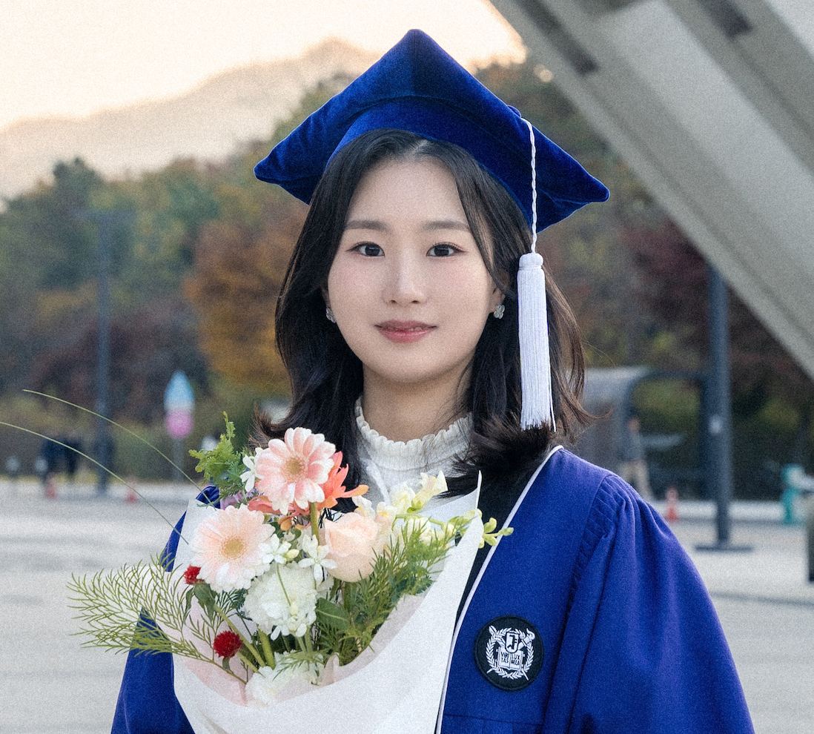

|
Cheyon Jin
Hi! I'm a research intern at Vision & Learning Lab in Seoul National University, under the supervision of Gunhee Kim.
My research interest lies in Natural Language Processing (NLP), particularly in advancing large language models toward human-like cognition, with a focus on reasoning, reinforcement learning, and multimodal systems to address both foundational challenges and practical applications.
Email /
CV /
Google Scholar /
LinkedIn
|

|
Education
Seoul National University (SNU)
Mar. 2021 – Feb. 2025 (expected)
B.S., Computer Science and Engineering
- CGPA: 4.13/4.3 (3.96/4.0)
Korea Minjok Leadership Academy (KMLA)
Mar. 2018 – Feb. 2021
Graduated Valedictorian of the Science Program
- CGPA: 4.0/4.0, Awarded In-school Gifted Student Scholarship for all three years.
|
|
|
Comparing Neighbors Together Makes it Easy: Jointly Comparing Multiple Candidates for Efficient and Effective Retrieval
Jonghyun Song,
Cheyon Jin,
Wenlong Zhao,
Andrew McCallum,
Jay-Yoon Lee
EMNLP, 2024
arXiv
Comparing Multiple Candidates (CMC) framework addresses the issue of error propagation from bi-encoders and expensive cross-encoders by comparing a query and multiple embeddings of similar candidates (i.e., neighbors) through shallow self-attention layers, delivering rich representations contextualized to each other.
|
Research Experience
SNU Vision and Learning Lab
Mar. 2024 – Present
Undergraduate Intern (Advisor: Prof. Gunhee Kim)
Projects
1) Intelligent Docent Service for Information Vulnerable Audiences (09/2024-Present)
2) Observation-Behavior-Aware Rewards from Video Language Models (03/2024-08/2024)
3) Paragraph Segmentation Model with LLM Fine-tuning (03/2024-05/2024)
SNU Undergraduate Research Opportunity Program (UROP)
Jan. 2024 – Feb. 2024
Participant (Advisor: Prof. Sang-goo Lee)
SNU Structure & Knowledge Injection into Machine Learning Lab
Jun. 2023 – Jan. 2024
Undergraduate Intern (Advisor: Prof. Jay-yoon Lee)
|
Professional Experience
IMM Investment, Seoul, Korea
Jan. 2013 – Feb. 2023
Research Analyst, Venture Investment Division
NC Soft AI R&D Group, Seoul, Korea
Jan. 2022 – Feb. 2022
Intern, Vision AI Lab Human Pose Team
|
Awards and Honors
Presidential Science Scholarship, Ministry of Science and ICT
2021 – Present
Grand Prize, The 2nd SNU X Hansot Business Contest
Nov. 2023
KMLA Dasan-Award (Ranked #1 in the Science Program)
Feb. 2021
National Athlete Nominee, Korean Chemistry Olympiad
2020
Gold Prize, The 33rd Korean Mathematical Olympiad
2019
Grand Prize, The 38th Korean Mathematics Competition High School Group
2018
|
|
{kind=link}